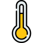
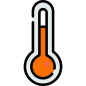
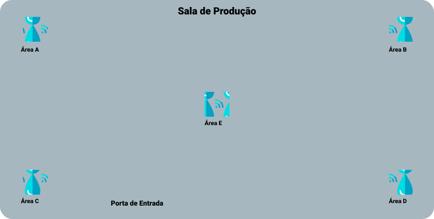

Alerta alta umidade. 62%

Umidade aceitável. 46%

Alerta baixa umidade. 43%

Emergência alta umidade. 64%

Umidade controlada. Ideal 53% a 52%

Emergência baixa umidade. 41%

Alerta crítico alta umidade. 65%
Umidade aceitável. 59%

Alerta crítico baixa umidade. 40%
Máxima umidade no dia
Mínima umidade no dia

